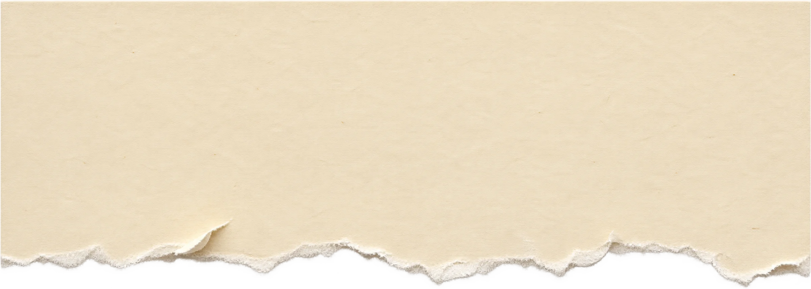

CHAMONIX · MONT-BLANC
Vidéaste de mariage à Chamonix
Vidéaste en Vallée de la Loire, je me déplace au pied du Mont-Blanc.

01Au pied du plus haut sommet
Je suis vidéaste de mariage en Vallée de la Loire, basé à Romorantin-Lanthenay. Chamonix n'est pas ma région : je m'y déplace, pour les mariages de destination. Je le dis simplement.
Ce qui ne change pas, c'est le métier. Lumière travaillée, double caméra discrète, drone quand il est autorisé, étalonnage pensé pour traverser le temps. Chamonix se distingue de toutes les autres destinations alpines par une chose : la verticalité. Ici, on n'est pas à côté de la montagne, on est dessous, et le décor pèse sur chaque plan.
02La haute montagne
La vallée de Chamonix, en Haute-Savoie, s'étire au pied du Mont-Blanc, le plus haut sommet des Alpes : son altitude, mesurée tous les deux ans, oscille autour de 4 805 à 4 810 mètres selon la neige. C'est ici qu'ont eu lieu les premiers Jeux d'hiver, en 1924. L'aiguille du Midi domine la ville, accessible par téléphérique.
Pour l'image, l'enjeu est l'échelle. Devant des parois pareilles, une silhouette paraît minuscule : on peut composer des plans larges, presque irréels. Le contraste entre la fête, intime, et le décor, immense, fait toute la force d'un film tourné ici.
03Comment je l'aborderais
Dans une vallée encaissée, la lumière a un rythme particulier. Le soleil arrive tard derrière les crêtes et repart tôt : les fenêtres sont plus courtes qu'en plaine. Voici ce que je viserais : connaître l'heure où la lumière entre dans la vallée, et caler les moments forts dessus.
En altitude, l'air est limpide et les contrastes sont durs. Je travaillerais les bords de journée, et je me méfierais du plein midi. La météo de haute montagne bascule vite : il faut un déroulé souple. Un sommet dans la brume, un ciel bas : ce ne sont pas des accidents, ce sont d'autres images. Je travaille la lumière, celle du jour et la mienne quand il le faut, et l'étalonnage reste le mien.
04Faire venir ses invités
L'aéroport le plus proche est Genève, à environ 88 km, soit 1h de route par l'Autoroute Blanche (A40). En train, on rejoint d'abord Saint-Gervais-les-Bains (gare du Fayet) depuis Genève via le Léman Express, puis on prend le Mont-Blanc Express, le petit train qui dessert toute la vallée jusqu'à Chamonix et au-delà.
L'arrivée par le train de la vallée fait déjà partie du voyage. C'est une information à donner tôt aux invités, en particulier l'hiver. Romorantin est à l'autre bout du pays, mais en formule Signature je ne facture aucun frais de déplacement.
05Survol et autorisation
Une vue aérienne, à Chamonix, c'est l'échelle du Mont-Blanc d'un seul coup d'œil. Mais c'est aussi un environnement parmi les plus encadrés pour le survol : haute montagne, sécurité aérienne, zones sensibles. Rien ne s'improvise sur place.
Je suis télépilote certifié. Je vérifie chaque site et je dépose les demandes nécessaires en amont. Sans autorisation, pas de vol : le film se construit alors depuis le sol, et la montagne reste écrasante à l'image, même sans drone.
06Deux formules, une même exigence
Mon travail se décline en deux formules. Pour un mariage à Chamonix, la formule Signature est sans frais de déplacement. En Élégance, le déplacement et l'hébergement sont annoncés en amont, au coût réel.
Élégance 2 650 € TTC
Des préparatifs à la première danse (9h → 1h). Cérémonie, séance couple éditoriale, plans drone selon la réglementation et la météo, film de 6 à 8 minutes.
Signature 4 000 € TTC
Journée complète (9h → 1h). Cérémonie et discours en intégralité, plans drone selon la réglementation et la météo, film de 6 à 8 minutes, film long de 20 à 25 minutes, teaser sous 7 jours, livraison prioritaire sous 5 semaines, coffret USB personnalisé offert.
Découvrir le détail des formules
07FAQ Chamonix
Comment vient-on à Chamonix ?
L'aéroport le plus proche est Genève, à environ 88 km, soit 1h de route par l'Autoroute Blanche (A40). En train, on rejoint Saint-Gervais-les-Bains (Le Fayet) depuis Genève par le Léman Express, puis on prend le Mont-Blanc Express qui dessert la vallée jusqu'à Chamonix.
Quelle saison pour un mariage à Chamonix ?
L'été donne une vallée verte, des journées longues et des sommets dégagés, c'est la fenêtre la plus souple pour les invités. L'hiver donne la haute montagne sous la neige, plus exigeant côté accès. Le décor du Mont-Blanc reste présent toute l'année.
Le drone est-il autorisé à Chamonix ?
La haute montagne et la vallée de Chamonix sont très réglementées pour le survol. Tout vol par drone demande une vérification préalable et, selon les zones, une autorisation. Je suis télépilote certifié et je n'engage jamais de vol sans accord en règle.
08Autres destinations alpines
Un mariage à Chamonix ?